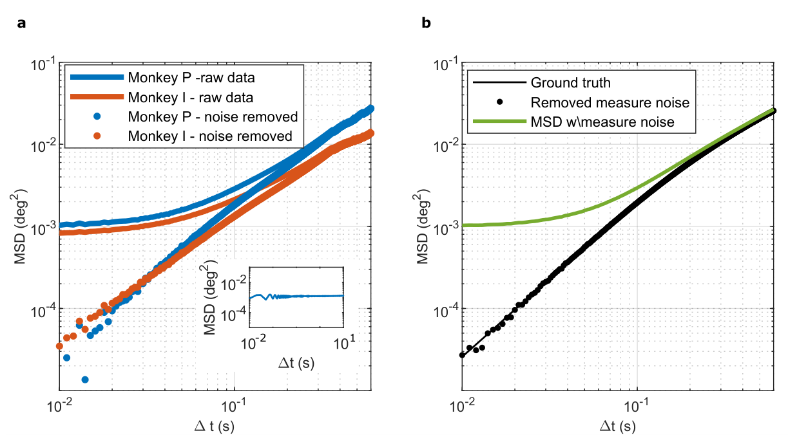
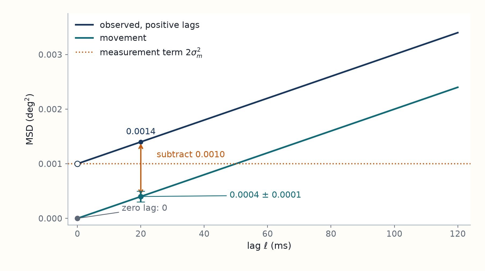
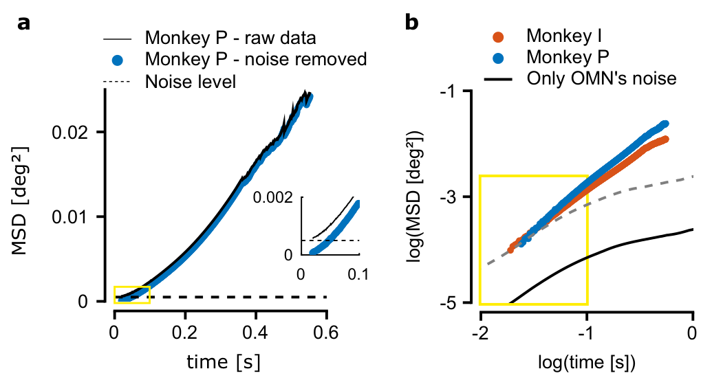
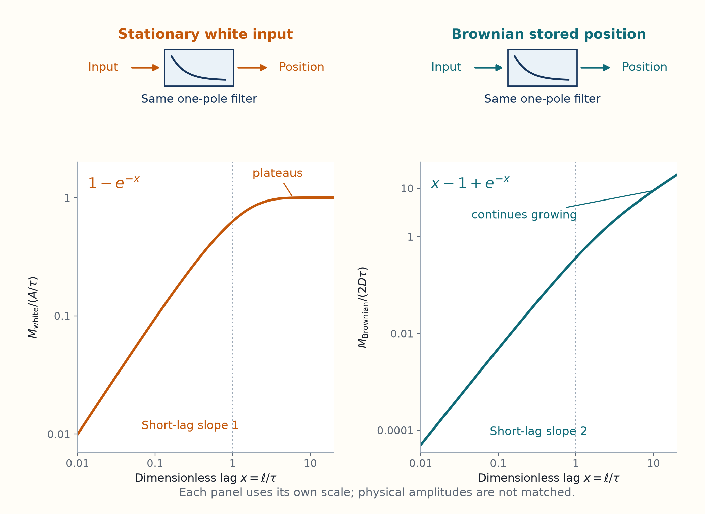

8 Drift growth distinguishes diffusion from filtered white noise
Eye movements recorded during steady gaze in monkeys look different over short and long time intervals. This chapter uses their timing to distinguish fluctuations around a fixed command from accumulated changes in the command, while accounting for eye-position measurement error.
The shared movement estimate concerns a single interval length. It leaves open whether the command merely fluctuates around a stable value or keeps accumulating changes. Comparing displacements over different time separations can distinguish these possibilities, but the smallest measured displacements may include a large contribution from recording error.
The mean squared displacement measures the average squared position change over a chosen interval. Separating the recording error from that quantity is necessary before interpreting its growth. To test whether the command accumulates changes, we compare two possible inputs after a decaying muscle response: fluctuations that do not accumulate and a position that wanders by diffusion. Their different long interval behavior explains how a smooth eye movement can still reflect a wandering stored value.
For lag \(\ell\), the quantity being compared is the mean squared displacement \(M(\ell)=\mathbb E[(E(t+\ell)-E(t))^2]\), where \(E\) is eye position. If position measurement errors have variance \(\sigma_m^2\), are independent between sampled times, and are uncorrelated with true eye movement, the paper’s positive-lag correction is
\[ M_{\rm obs}(\ell)=M(\ell)+2\sigma_m^2,\qquad \ell>0. \]
Here \(M_{\rm obs}\) is the MSD calculated from measured positions, including measurement noise, while \(M\) is the MSD of the true eye position. The corrected \(M\) keeps growing over the measured range. In the paper’s circuit model, an internally diffusing position has \(M_{\rm internal}(\ell)\simeq2D\ell\) over the relevant time range, where \(D\) is the internal position diffusion coefficient; the muscles filter it before it becomes eye motion. The derivations and their assumptions follow below. See paper, Eqs. 18–19, p. 10 and integrator diffusion, PDF p. 6.
[Derivation: measurement error and diffusion] Let \(E_{\rm obs}(t)=E(t)+\nu(t)\), where \(\nu\) is position measurement error. For a positive lag, the measured displacement is \(\Delta E_{\rm obs}=\Delta E+\nu(t+\ell)-\nu(t)\). On squaring and averaging, the cross term vanishes under the assumptions above. The two independent errors each contribute variance \(\sigma_m^2\), so \(M_{\rm obs}(\ell)=M(\ell)+2\sigma_m^2\). At zero lag the same error is subtracted from itself, so this positive-lag correction does not apply.
For the internal position, model a displacement as \(\Delta B=\sqrt{2D}\,\Delta W\), where the Brownian increment \(\Delta W\) has mean zero and variance \(\ell\). Thus \(\mathbb E[(\Delta B)^2]=2D\ell\). This is the internal signal before the muscle filter; the observed eye MSD need not be linear at short lags.
8.1 Independent measurement error adds a constant offset to the MSD
Using the earlier definition of mean squared displacement,
\[ M(\ell)=\mathbb E\{[E(t+\ell)-E(t)]^2\} \]
is the mean squared displacement, or MSD, at lag \(\ell\). The data estimate it within each microsaccade free segment, then average the available segment estimates at each lag. Larger lags have fewer eligible segments. The 1 ms sampling sets the available lag spacing.1
At short lags, the displacement can be smaller than the search coil’s measurement error. Suppose its reading is \(E_{\rm obs}(t)=E(t)+\nu(t)\). The measurement error is assumed to have:
- Zero mean and variance \(\sigma_m^2\).
- Independence from true movement.
- No correlation between distinct sampled times.
For a positive lag, let \(\delta E=E(t+\ell)-E(t)\) be true eye displacement and \(\delta\nu=\nu(t+\ell)-\nu(t)\) the change in measurement error. Then
\[ \begin{aligned} M_{\rm obs}(\ell) &=\mathbb E[(\delta E+\delta\nu)^2]\\ &=M(\ell)+\mathbb E[\nu(t+\ell)^2]+\mathbb E[\nu(t)^2] -2\mathbb E[\nu(t+\ell)\nu(t)]\\ &=M(\ell)+2\sigma_m^2. \end{aligned} \]
The mixed movement-error term vanishes by independence. This is Eqs. 18–19. The correction is the variance of a difference of two errors, \(2\sigma_m^2\), rather than the variance of a single position error. At exactly zero lag the same error is subtracted from itself, so the MSD is zero. A positive lag plateau near zero lag can still occur when successive measurement errors are independent.2
The authors estimated the plateau contribution at order \(10^{-3}\) deg\(^2\), checked its scale with a coil fixed in space, and subtracted that contribution from the observed MSD. This is a correction of an average statistic, not knowledge of each trial’s unknown noise. Smoothing the eye trajectories instead would also change the movement statistics the analysis seeks to measure. If the plateau estimate has uncertainty \(10^{-4}\) deg\(^2\), a corrected MSD of that size is unreliable even when the plateau itself is much larger. The peer review response uses this example to explain the shortest lag limitation.3
Original paper figure: Ben-Shushan et al. (2022), Extended Data Figure 2


For instance, a constructed measured MSD of \(0.0014\) deg\(^2\) with an estimated noise contribution \(0.0010\) deg\(^2\) leaves \(0.0004\) deg\(^2\). A \(0.0001\) deg\(^2\) uncertainty in the subtraction is already 25% of that result. This is why a corrected short lag point needs an uncertainty assessment as well as a positive value. If measurement errors were temporally correlated, the correction would instead be \(2[\sigma_m^2-C_\nu(\ell)]\), where \(C_\nu\) is their covariance at lag \(\ell\). A constant subtraction would then need revision.
For a constructed Brownian movement with \(D=0.010\) deg\(^2\)/s, adding independent position measurement errors with \(2\sigma_m^2=0.0010\) deg\(^2\) shifts every positive-lag MSD upward by the same amount.

The Brownian movement is chosen only to make the constant offset visible. See Measurement noise correction, Eqs. 18–19, p. 10.
8.2 The MSD plateaus for filtered white noise but grows for filtered diffusion
The filtering introduction separates stationary filtered noise from a filtered position command that keeps accumulating changes. Here the lag dependence is compared with the eye recordings.
The corrected MSD keeps increasing over the observed range, toward a second, while its logarithmic slope decreases and remains between one and two. Define that local slope by the derivative below, where \(M'(\ell)=dM/d\ell\) is the change of MSD per unit lag:
\[ \alpha(\ell)=\frac{d\log M(\ell)}{d\log\ell} =\frac{\ell M'(\ell)}{M(\ell)}. \]
Two examples show how the exponent describes motion:
- Ordinary diffusion: \(M=2D\ell\), so \(\alpha=1\).
- Roughly constant velocity over a short interval: displacement is \(v\ell\), giving \(M=\mathbb E[v^2]\ell^2\) and \(\alpha=2\).
Growth faster than linear is called superdiffusion. Here it describes a finite range of lags. It does not assert a single power law for arbitrarily long times.4
Could temporally uncorrelated motor noise acquire the observed MSD just by passing through muscles? A low pass filter suppresses rapid input changes relative to slow ones. The input is idealized as white noise, so fluctuations at unequal times are uncorrelated. A stable, decaying response to this noise produces a stationary process in the sense needed here: its mean is constant and its covariance depends only on time separation. Its position variance consequently does not grow with absolute time. Let \(\xi(t)\) be the random input and \(h(u)\) the eye’s response at elapsed time \(u\) after an impulse. The convolution \(E=h*\xi\) adds the effects of all past input values, \(E(t)=\int_0^\infty h(u)\xi(t-u)\,du\). The input has
\[ \mathbb E[\xi(t)\xi(t')]=A\delta(t-t'). \]
The noise intensity \(A\) has units input\(^2\) times seconds. Expanding the convolution and using the delta function yields, for \(\ell\ge0\),
\[ C_E(\ell)=\mathbb E[E(t)E(t+\ell)] =A\int_0^\infty h(u)h(u+\ell)\,du. \]
For a stationary centered position, expanding the squared difference then gives
\[ M(\ell)=2[C_E(0)-C_E(\ell)]. \]
If the kernel decays sufficiently rapidly, its overlap with a shifted copy tends to zero. The MSD consequently approaches \(2C_E(0)\), a finite plateau. This reconstructs the reasoning of Eqs. 20–22.5
For the one exponential filter \(h(u)=\Theta(u)e^{-u/\tau}/\tau\), \(\tau\) is its response time, and \(\Theta(u)\) is zero before the impulse (\(u<0\)) and one afterwards (\(u>0\)). The output covariance and MSD are
\[ C_E(\ell)=\frac{A}{2\tau}e^{-\ell/\tau},\qquad M_{\rm white}(\ell)=\frac A\tau(1-e^{-\ell/\tau}). \]
Substituting the exponential into the covariance integral makes the result explicit:
\[ C_E(\ell)=\frac{A e^{-\ell/\tau}}{\tau^2} \int_0^\infty e^{-2u/\tau}\,du =\frac{A}{2\tau}e^{-\ell/\tau}. \]
Using \(M(\ell)=2[C_E(0)-C_E(\ell)]\) then gives the MSD above.
This simple filter has a short lag MSD proportional to \(\ell\) and a long lag plateau. A double exponential filter is smoother at short lags, but still gives a plateau because its kernel also decays. Increasing \(A\) raises the curve without removing its flattening. The paper’s simulated private OMN noise, passed through muscle dynamics, is both too small and too flat at long lags. In Fig. 3b, using 2,000 heterogeneous OMNs, its contribution is about 1% of the observed variance near 900 ms.6
Original paper figure: Ben-Shushan et al. (2022), Figure 3


Filtered white noise cannot explain continued long-lag growth. Suppose instead the input is a stored position \(B(t)\) undergoing Brownian motion with \(\mathbb E[(B(t+\ell)-B(t))^2]=2D\ell\). Its position variance accumulates. A low pass filter with nonzero static gain smooths the path while retaining that accumulating long time displacement variance. The following one exponential example is a teaching reconstruction, not the paper’s full muscle model. It derives how smooth movement can have a slope between one and two even though the stored position undergoes ordinary diffusion.
Let
\[ \tau\dot E+E=B,\qquad dB=\sqrt{2D}\,dW. \]
Here \(B\) is the changing position command and \(E\) is the eye angle that follows it, both in degrees. The mismatch \(B-E\) drives velocity: a command to the right of the current position makes the eye move right. For the same mismatch, a larger response time \(\tau\) gives a smaller velocity, so the eye takes longer to catch up and smooths rapid command changes more strongly. This response time belongs to the simplified eye filter. It is not automatically the synaptic decay time used in the memory model.
\(W\) is a Brownian process with unit increment variance per unit time, so \(D\) has units deg\(^2\)/s. Define velocity \(v=\dot E=(B-E)/\tau\). Taking its increment gives
\[ \tau\,dv=-v\,dt+\sqrt{2D}\,dW. \]
Velocity loses its past value over time \(\tau\) and receives new random input. To add the surviving effect of those inputs, divide the past into short intervals of width \(h\). The Brownian change \(\Delta W_j=W(u_j+h)-W(u_j)\) has mean zero and variance \(h\). Changes in disjoint intervals are independent. Its contribution to the velocity at time \(t\) is approximately \((\sqrt{2D}/\tau)e^{-(t-u_j)/\tau}\Delta W_j\): the initial change has decayed between \(u_j\) and \(t\).
The integral against \(dW(u)\) denotes the limit of these weighted sums as \(h\) tends to zero. It does not require an ordinary derivative of the Brownian path. After the initial velocity has decayed, extending the input history into the distant past gives
\[ v(t)=\frac{\sqrt{2D}}{\tau}\int_{-\infty}^{t}e^{-(t-u)/\tau}\,dW(u). \]
For a lag \(s\geq0\), let \(C_v(s)=\operatorname{Cov}[v(t),v(t+s)]\) be the velocity covariance. Multiply the sums for \(v(t)\) and \(v(t+s)\) and average. Products of distinct increments have zero mean. The same increment contributes its variance \(h\), so the sum becomes an ordinary overlap integral over their shared past:
\[ \begin{aligned} C_v(s) &=\frac{2D}{\tau^2}\int_{-\infty}^{t} e^{-(t-u)/\tau}e^{-(t+s-u)/\tau}\,du\\ &=\frac{2D}{\tau^2}e^{-s/\tau}\int_0^\infty e^{-2r/\tau}\,dr =\frac D\tau e^{-s/\tau}. \end{aligned} \]
Here \(r=t-u\) is the age of an input increment. Covariance is even in the lag, so \(C_v(s)=(D/\tau)e^{-|s|/\tau}\) for either sign of \(s\). Integrating velocity over an interval gives position change. The double integral over its covariance reduces to
\[ \begin{aligned} M_{\rm Brownian}(\ell) &=\int_0^\ell\int_0^\ell C_v(u-v)\,du\,dv\\ &=2\int_0^\ell(\ell-s)C_v(s)\,ds\\ &=2D[\ell-\tau(1-e^{-\ell/\tau})]. \end{aligned} \]
At short lags, \(1-e^{-\ell/\tau}=\ell/\tau-\ell^2/(2\tau^2)+\cdots\), so
\[ M_{\rm Brownian}(\ell)\simeq(D/\tau)\ell^2. \]
The eye keeps approximately the same velocity over that interval. At long lags,
\[ M_{\rm Brownian}(\ell)\simeq2D(\ell-\tau), \]
which grows linearly rather than approaching a plateau.
Holding the internal diffusion coefficient \(D\) fixed, increasing \(\tau\) reduces short-lag displacement and moves the transition to linear growth to longer lags. It does not stop accumulating error: the long-lag MSD growth rate still approaches \(2D\). Increasing \(D\) instead raises the entire MSD curve in proportion, at fixed \(\tau\). The local logarithmic slope of this MSD is
\[ \alpha(\ell)=\frac{\ell(1-e^{-\ell/\tau})} {\ell-\tau(1-e^{-\ell/\tau})}, \]
approaching two at short lags and one at long lags. At \(\ell=\tau\) it is \(e-1\simeq1.718\). At \(\ell=5\tau\) it is about \(1.239\). Thus an intermediate slope can arise from filtering ordinary diffusion, without faster than Brownian accumulation inside the memory circuit.
The curves compare the two inputs after the same filter with one exponential response, also called a one pole filter.

The white-input short-lag slope of one belongs to this one-pole example.
The actual muscle response contains fast and slow exponential components, and the full model also contains motor neuron filtering and feedback. Those ingredients change the detailed curve. The one exponential derivation teaches the distinction relevant to Fig. 3: a decaying low pass filter of stationary white noise saturates, whereas the same filter, with nonzero static gain, retains accumulating displacement from a wandering position. A slow correlated peripheral source is a different hypothesis from the temporally uncorrelated noise rejected by this comparison.
Ben-Shushan, N., Shaham, N., Joshua, M., & Burak, Y. (2022). Fixational drift is driven by diffusive dynamics in central neural circuitry. Nature Communications, 13, 1697. DOI. Main p. 10, “Calculation of empirical MSD.”↩︎
Ben-Shushan, N., Shaham, N., Joshua, M., & Burak, Y. (2022). Fixational drift is driven by diffusive dynamics in central neural circuitry. Nature Communications, 13, 1697. DOI. Main p. 10, “Removal of measurement noise,” Eqs. 18–19; Supplementary Information, p. 8, Extended Data Fig. 2. The plotted plateau is the displacement noise contribution, twice the single position noise variance. ↩︎
Ben-Shushan, N., Shaham, N., Joshua, M., & Burak, Y. (2022). Fixational drift is driven by diffusive dynamics in central neural circuitry. Nature Communications, 13, 1697, peer review file, pp. 20–21, measurement noise subtraction, uncertainty example, and short lag restriction. DOI. ↩︎
Ben-Shushan, N., Shaham, N., Joshua, M., & Burak, Y. (2022). Fixational drift is driven by diffusive dynamics in central neural circuitry. Nature Communications, 13, 1697. DOI. Main pp. 5–6, “Central source” timing argument and Fig. 3. ↩︎
Ben-Shushan, N., Shaham, N., Joshua, M., & Burak, Y. (2022). Fixational drift is driven by diffusive dynamics in central neural circuitry. Nature Communications, 13, 1697. DOI. Main p. 10, “MSD curve of low-pass filtered white noise,” Eqs. 20–22. The normalized one exponential example and filtered Brownian derivation are teaching reconstructions. ↩︎
Ben-Shushan, N., Shaham, N., Joshua, M., & Burak, Y. (2022). Fixational drift is driven by diffusive dynamics in central neural circuitry. Nature Communications, 13, 1697. DOI. Main pp. 5–6, “Central source” timing argument and Fig. 3. ↩︎